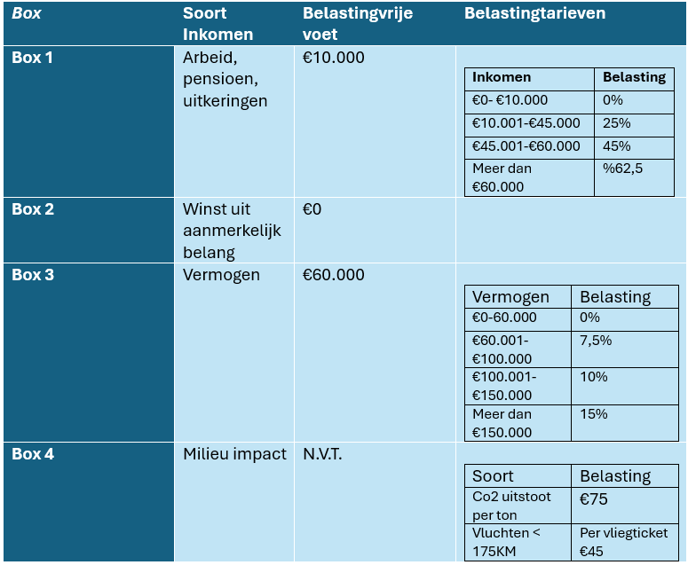

Het nieuwe systeem
Nederland heeft een nieuw belastingsysteem nodig dat zowel eerlijk is als toekomstgericht. Ons voorstel introduceert een systeem met vier boxen waarin inkomens en vermogen progressief worden belast, terwijl ook milieu-impact een sleutelrol krijgt.
Box 1: Arbeid, pensioen en uitkeringen
De eerste €10.000 is belastingvrij, zodat lagere inkomens worden ontzien en meer koopkracht overhouden. Daarna geldt een oplopend belastingtarief:
- €10.001–€45.000: 25%
- €45.001–€60.000: 45%
- Meer dan €60.000: 62,5%
Box 2: Winst uit aanmerkelijk belang
Hier geldt geen belastingvrije voet: iedere euro wordt belast, bijvoorbeeld tegen een tarief van 27%. Dit moedigt eigenaren aan om hun vermogen te herinvesteren of zinvol in te zetten.
Box 3: Vermogen
Vermogen tot €60.000 blijft vrijgesteld, maar daarboven gelden oplopende tarieven:
- €60.001–€100.000: 7,5%
- €100.001–€150.000: 10%
- Meer dan €150.000: 15%
Box 4: Milieu-impact
Dit is het unieke element van ons systeem. Deze box belast vervuilende activiteiten zoals CO₂-uitstoot en korte vluchten:
- CO₂-uitstoot: €75 per ton
- Korte vluchten (<175 km): €45 per ticket
Door vervuilers te belasten, stimuleren we duurzamer gedrag en maken we het systeem toekomstgericht.
Conclusie
Dit systeem combineert eerlijkheid met economische en ecologische verantwoordelijkheid. Het vermindert ongelijkheid, stimuleert duurzamer gedrag en draagt bij aan een rechtvaardiger samenleving en een leefbare planeet.